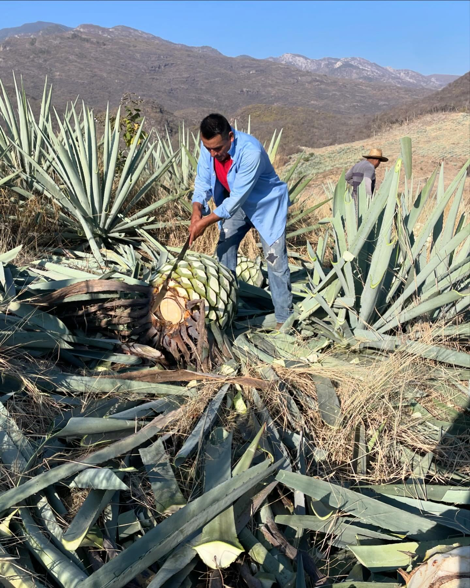

01 · JIMA
Escultura 01 · Roseta de Maguey
Selección y Corte (Jima)
Solo cortamos magueyes que han alcanzado su madurez plena (entre 8 y 15 años según la especie) en las tierras de El Gramal, Nejapa de Madero.